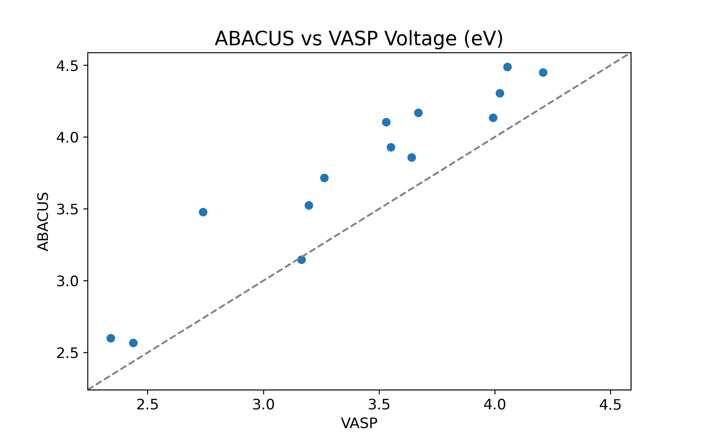

Test date: 2023-09-27.
Version : v3.3.4(4a6d764 (Tue Sep 26 14:08:49 2023 +0000))
1. Introduction
Simulation of battery materials is of great significance. In this test, ab-initio calculations were carried out on a series of typical battery systems (combination of Li/Na and Fe/Co/Ni/Mn/CrO2) using ABACUS combined with the +U. Self-consistent field (SCF) calculations were performed, and the voltages were also calculated and compared with the results obtained using Vienna Ab initio Simulation Package (VASP).
Click
here to check the ABACUS inputs.
Click
here to check more details of the calculations.
2. Results
2.1 Statistical metrics
This test evaluates the calculation normal termination ratio, SCF convergence ratio, maximum number of steps used for SCF convergence, as well as the maximum deviation ratio and correlation coefficient between the voltage calculated by ABACUS and the VASP reference results, and the accuracy of computed atomic magnetic moments.
2.1 Voltage
The voltage calculated by ABACUS and VASP.
